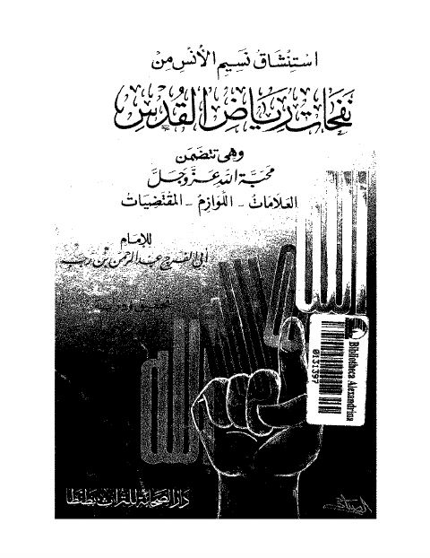

Downloads need an internet connection.
استنشاق نسيم الأنس من نفحات رياض القدس
Authors: ابن رجب الحنبلي
Editors: مجدي قاسم
Publishers: دار الصحابة للتراث
▫️ العنوان: استنشاق نسيم الأنس من نفحات رياض القدس ▪️ المؤلف: #عبد_الرحمن_بن_أحمد_ابن_رجب_الحنبلي ▫️ المحقق: #مجدي_قاسم ▪️ الناشر: #دار_الصحابة_للتراث_بطنطا ▫️ تاريخ النشر: 1411هـ 1910م ▪️ بلد النشر: طنطا، #مصر ▫️ الطبعة: 1 ▪️ عدد الأجزاء: 1 ▫️ الصفحات: 209 ▪️ نوع الوعاء: #كتاب ▫️ التصنيف الرئيسي: #الزهد_والرقائق ۪